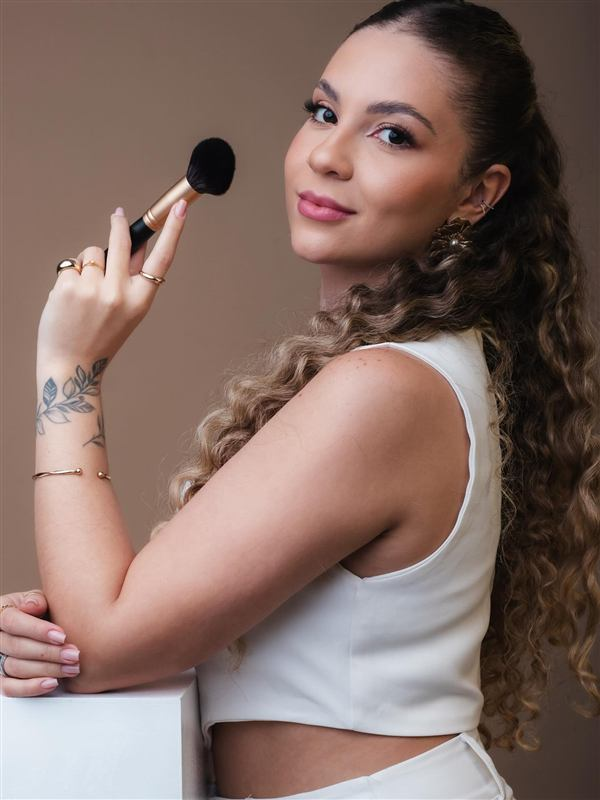
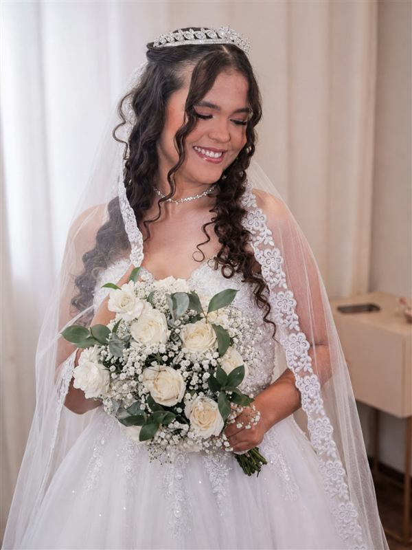
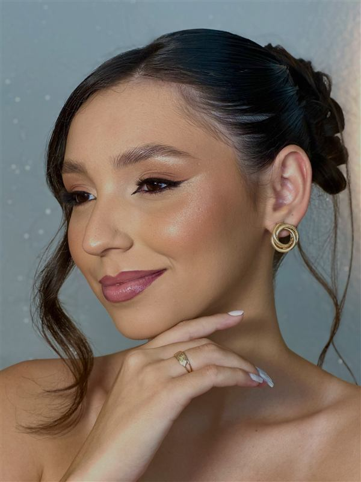
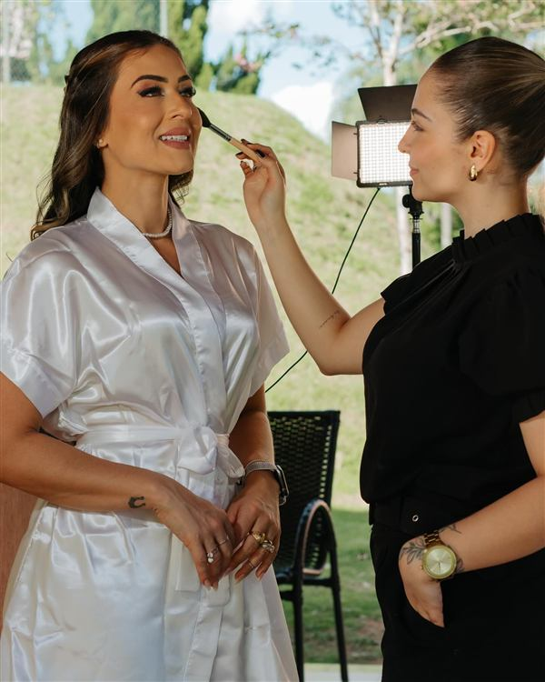
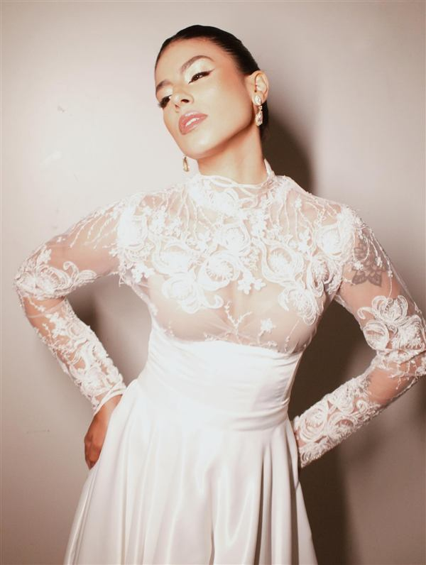
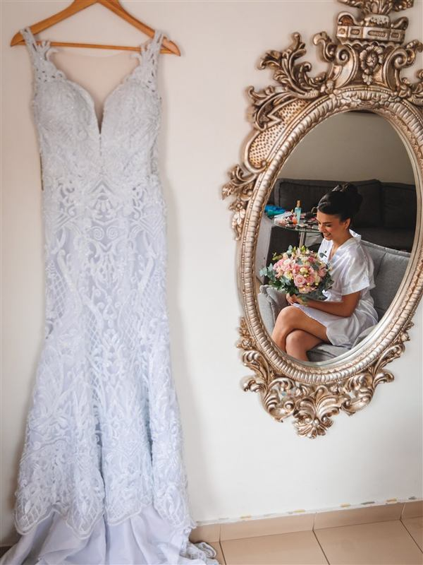
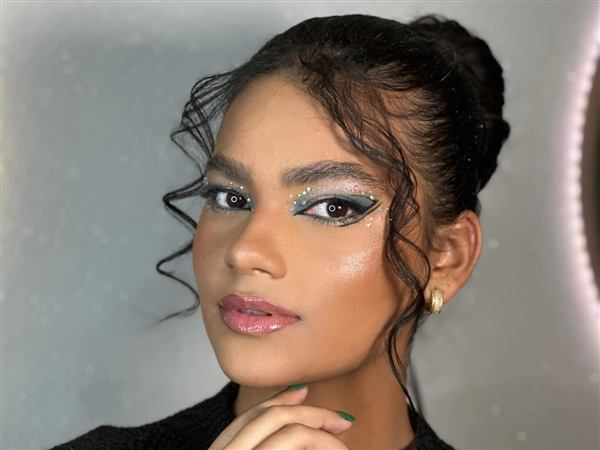

Maquiadora em Divinópolis · Noivas e eventos
Uma beleza que realça quem você já é.
Maquiagem e preparação para o seu grande dia, feitas com calma, cuidado e atenção a cada detalhe. Você só precisa aproveitar.
Resposta em até 24h · Sem compromisso
- Divinópolis e região
- Studio Dias ou no local do evento
- Noivas, debutantes, formandas e madrinhas
Uma história construída cliente por cliente.
- 8 anos
- maquiando em Divinópolis, desde 2018
- 7 de 9
- clientes citam a durabilidade nos depoimentos
- 4,3 mil
- pessoas acompanham o trabalho no Instagram
- Divinópolis
- e cidades da região Centro-Oeste de Minas

Quem vai cuidar de você
Muito prazer, eu sou a Luiza.
Sou maquiadora em Divinópolis desde 2018. Meu trabalho é realçar a sua beleza sem esconder quem você é, com uma pele que aguenta horas de festa, abraços e fotos.
Acredito que a melhor maquiagem é aquela em que você se olha no espelho e se reconhece, só que na sua versão mais radiante.
Especialista em maquiagem resistente
Serviços
Uma produção para cada ocasião.
Maquiagem resistente, pensada para durar do primeiro clique até a última música.
-
Noivas
Making of tranquilo, teste e uma make que dura até o fim da festa.
-
Noiva civil
Produção leve e elegante para o casamento no cartório.
-
Social
Para madrinhas, formandas e convidadas. Pode incluir ondas.
-
Debutantes
Produção para os 15 anos, do seu jeito.
-
Ensaios
Maquiagem pensada para câmera, inclusive ensaio corporativo.
-
Curso de maquiagem
Aprenda técnica, acabamento, atendimento e como fotografar o seu trabalho.
Valores e pacotes sob consulta. Pedir orçamento no WhatsApp
Como organizo o seu dia
Eu e minha equipe cuidamos de você e de quem você ama.
Mãe, madrinhas e damas prontas no horário, sem correria.
No dia do casamento, minha atenção fica toda em você. Enquanto preparo a noiva, profissionais de confiança, que já trabalham comigo, atendem as pessoas mais próximas.
Elas seguem o mesmo padrão de qualidade e respeitam o estilo de cada pessoa. Montamos o cronograma juntas, para que todo mundo fique pronto no tempo certo.
No fim, você olha em volta e vê todo mundo lindo e tranquilo, curtindo o momento com você.
Clientes reais
Cada noiva com a sua própria beleza.
Tons de pele, idades e estilos diferentes. Veja se você se identifica com alguma.
-

Noiva -

Social -

Noiva -

Making ofFoto: @fotodarafa -

Noiva -
Social + ondas -

Dia da noiva -

Artística
Bastidores
Veja o dia da noiva de perto.
Vídeos curtos do Instagram mostrando a preparação e o Studio Dias.
O que elas contam depois
O resultado aparece nas fotos. O carinho fica na memória.
-
Amei a maquiagem! Foi perfeita, impecável! Durou a festa todinha e até no outro dia! Obrigada por tudo.
Cliente · mensagem no WhatsApp
-
Eu quem agradeço seu trabalho impecável. Eu amei, a make durou até de manhã, estava ainda linda.
Cliente · mensagem no WhatsApp
-
Eu amei muito a make, ela ficou intacta até o final da festa, todos elogiaram muito! Com certeza voltarei mais vezes, muito obrigada!
Cliente · mensagem no WhatsApp
-
Amei seu trabalho, fiquei completamente encantada. Obrigada pela atenção em todos os detalhes e por esse resultado incrível!
Cliente · mensagem no WhatsApp
-
Eu adorei a make e durou até de madrugada, quando a festa acabou. Mesmo precisando fazer com maior antecedência, deu tudo certo.
Cliente · mensagem no WhatsApp
-
Eu amei a make, durou muito e ficou do jeitinho que eu queria. Além do atendimento, que foi impecável também. Vou marcar mais vezes e indicar para outras pessoas.
Cliente · mensagem no WhatsApp
Studio Dias
Um espaço para você se arrumar com calma.
Hoje atendo no Studio Dias, um espaço pensado para você se arrumar com calma e conforto. Cada produção começa entendendo o seu estilo e o que você imagina para o seu dia.
Rua Pains, 131 · Vila CruzeiroDivinópolis-MG (quase esquina com a 7 de Setembro)
Curso de maquiagem profissional
Aprenda técnica, acabamento, atendimento e como fotografar o seu trabalho. As inscrições são pelo direct do Instagram.
Quero saber do cursoAgenda aberta
A sua data ainda está disponível?
A agenda já está aberta e as datas são limitadas. Me conta quando e onde vai ser o seu evento, e eu te envio a disponibilidade e o orçamento completo.
Respondo em até 24 horas nos dias úteis. Atendimentos todos os dias, inclusive fins de semana e feriados.